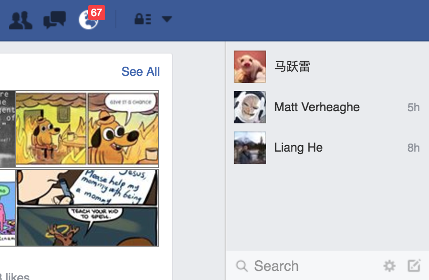
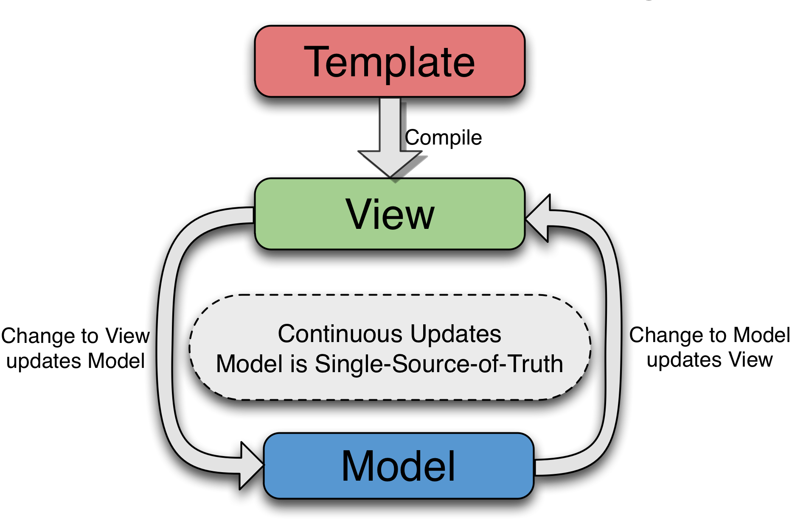
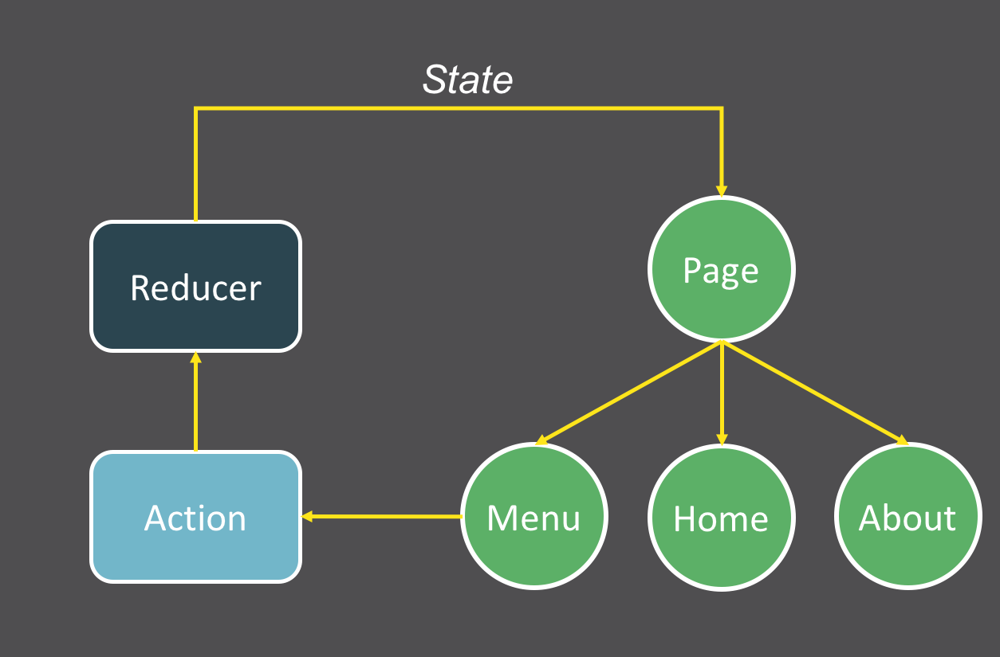

class: cover <div style="margin-top: -10em;"> <img src="logo.svg" style="width: 20em;" /> </div> .cover-content[ # The React Way springuper@gmail.com ] --- # 为何 UI 开发越发困难？ -- <br /> .trigger-time.trigger-time--2em[ - 需要人工确认视觉效果 - 状态越来越多 - 缺乏与快速增长的复杂度相匹配的工具 ] --- # 栗子 <div style="margin: 3em;">  </div> --- .trigger-time.trigger-time--2em[ - 跃雷发来一条消息 - Matt 离线 - 小明 在线 - Liang He 离线 - Liang He 手机在线 - ... ] --- # 现在 UI 应该是？ -- <div style="margin: 3em;"> </div> --- # 怎么破？ .trigger-time.trigger-time--2em[ - 让 UI 更可预测 - 让 UI 更可靠 ] -- ### 让 UI 能够和 Data 联动 .code-block[ ```javascript [ { name: '跃雷', status: 'online', unread: 1 }, { name: '小明', status: 'online', unread: 0 }, { name: 'Liang He', status: 'mobile-online', unread: 0 }, ] ``` ] --- # Data Binding <div style="margin: 0; background: white;">  </div> --- # 不同流派 ### Key-Value Observation .trigger-time.trigger-time--2em[ - Ember - Knockout - Backbone - Meteor - Vue ] ### Dirty Check .trigger-time.trigger-time--2em[ - Angular ] --- # 问题 ### 受限于双向绑定模式本身，存在以下问题： .trigger-time.trigger-time--2em[ - 数据间关系需要小心处理，例如 computed property - 观测到数据变化的机制多少存在一些局限性，例如 dirty check ] --- # The React Way ## Single Way Data Binding ### 数据变化时，重算所有数据并更新所有 DOM 不就 ok 了？ -- <br /> ### React 找到了更好的办法 .trigger-time.trigger-time--2em[ - 在数据和 DOM 之间引入 Virtual DOM - 数据变化时，re-render 得到新的 Virtual DOM - 比较新旧 Virtual DOM 的 diff - 根据 diff，按需更新 DOM ] --- # Virtual DOM .code-block[ ```html <ul id='list'> <li class='item'>Item 1</li> <li class='item'>Item 2</li> <li class='item'>Item 3</li> </ul> ``` ] .code-block.code-block--small[ ```javascript var element = { tagName: 'ul', props: { id: 'list' }, children: [ {tagName: 'li', props: {class: 'item'}, children: ["Item 1"]}, {tagName: 'li', props: {class: 'item'}, children: ["Item 2"]}, {tagName: 'li', props: {class: 'item'}, children: ["Item 3"]}, ] } ``` ] --- # Virtual DOM Diff <div style="margin: 0;"> <img src="virtual-dom-diff.png" style="width: 35em;" /> </div> --- # Reactive Functional Programming ## Data 变化 => UI 更新 ## React(props) => UI --- # 这么好用，怎么写呢？ ### Rule 1 你所见的，都是组件 .code-block[ ```jsx class HelloMessage extends React.Component { render() { return React.createElement( "div", null, "Hello ", this.props.name ); } } ReactDOM.render( React.createElement(HelloMessage, { name: "Jane" }), mountNode ); ``` ] -- 看起来有些蛋疼是不是？ --- # JSX ### Rule 2 JSX 让你飞 .code-block[ ```jsx class HelloMessage extends React.Component { render() { return <div>Hello {this.props.name}</div>; } } ReactDOM.render(<HelloMessage name="Jane" />, mountNode); ``` ] --- # 数据 & 状态 ### Rule 3 使用 `this.setState` 主动更新状态 .code-block.code-block--small[ ```jsx class Timer extends React.Component { constructor(props) { super(props); this.state = { secondsElapsed: 0 }; } tick() { this.setState((prevState) => ({ secondsElapsed: prevState.secondsElapsed + 1 })); } componentDidMount() { this.interval = setInterval(() => this.tick(), 1000); } componentWillUnmount() { clearInterval(this.interval); } render() { return <div>Seconds Elapsed: {this.state.secondsElapsed}</div>; } } ReactDOM.render(<Timer />, mountNode); ``` ] --- # 生命周期方法 .trigger-time.trigger-time--2em[ - getInitialState - componentWillMount - componentDidMount 组件已经挂载在 DOM 中 - shouldComponentUpdate 是否需要更新组件 - componentWillUpdate - componentDidUpdate - componentWillUnmount 组件即将从 DOM 移除 ] --- # Client-Server 同构 ### 因为 Virtual DOM，React 具备了在 Server 端渲染 HTML 的能力 --- # 周边 ### React 只是 View 层，需要配合其它工具/库才能构建完整应用 .trigger-time.trigger-time--2em[ - State Manager: Redux, MobX - Router: React-Router - Data Driven: GraphQL, Relay - Test: ReactTestUtils, Enzyme - Build Tool: Webpack, Babel ] --- # Redux <div style="margin: 0;">  </div> --- # [Demo](https://github.com/gaearon/redux-devtools/tree/master/examples/todomvc) --- # References .trigger-time.trigger-time--2em[ - [The Secrets of React's Virtual DOM](https://www.youtube.com/embed/-DX3vJiqxm4?list=FLoT2_Cq0W_xTx6YZfzUVJQw) - [React’s diff algorithm](http://calendar.perfplanet.com/2013/diff/) - [Awesome React](https://github.com/enaqx/awesome-react) ] --- name: last-page # Thanks